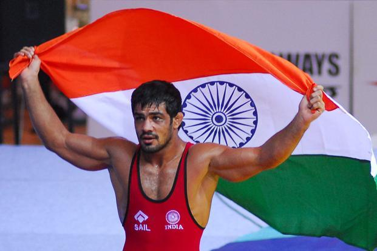

Even though rural youths are talented in many sports, a mechanism to spot their talent, nurture them to show a substantial rise in their respective sport, is missing. It’s high time something was done to bridge this gap. For instance, a web application can be introduced, where on entering sports of interest and specialization, gender, age, district, state, a rural youth is made aware of the opportunities near him which he/she is eligible for. Support could also be extended from Sports Authorities’ side in the form of advanced training or otherwise.